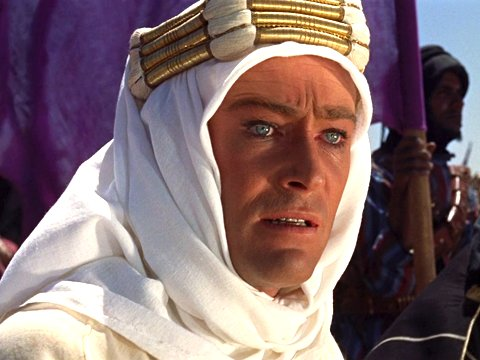

Lawrence of Arabia, Trailer Frame (Peter O'Toole as T. E. Lawrence)
David Lean · 1962 · Film, colour (frame from the trailer)
In copyright. Look and learn: shown for study, not for download.
David Lean's first choice for Lawrence was Albert Finney, then almost unknown, who passed a screen test and then turned the part down because he would not sign a long contract with the producer Sam Spiegel. Marlon Brando was offered it as well. Peter O'Toole, at six feet two, was almost nine inches taller than Lawrence had been. The desert scenes were shot in Jordan, Morocco and Spain. This frame comes from the film's trailer.